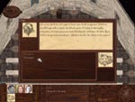
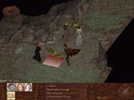

Harden Armor
| Max 3 Skill Points, Thaumaturgical Ritual "Sharpen Weapon" |
Background/Summary
Girian, the resident ritualist, will teach the party the bulk of their thaumaturgy skills. The first spell thaumaturgists can learn from Girian is Harden Armor. Before beginning this quest the party must complete the Tuition quest.
Player's Introduction
After teaching the party Sharpen Weapon, Glauke sends the party to Girian for further instruction.
Objectives
Bring Girian a Neblii Mantis Carapace.
Completing Objectives
|
1) Girian can be found in the Lecture Hall. When the party first speaks with Girian he will hold up paper and stone and ask the leader which of the two is harder. If the party answers that the stone is harder, Girian will mark the party's Academy map with the Neblii-Mantis Lair. *IMPORTANT* If the party says that paper is harder, they will be verbally abused and sent back to Glauke to have their tuition refunded. Girian will not teach them anymore spells. The party can still access one of the spells that Girian teaches by having Kalisco join the party.
|

|
|
2) Walk a short distance south of town and enter the Neblii-Mantis Lair. (Pick up the Ancient Bone at the mouth of the cave). The Carapaces are scattered toward the back of the cave and guarded by Mantids. It is not necessary to kill all of the Mantids.
|

|
|